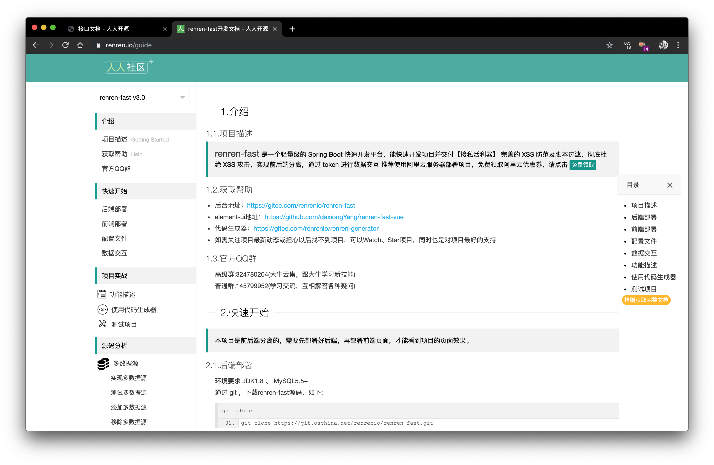
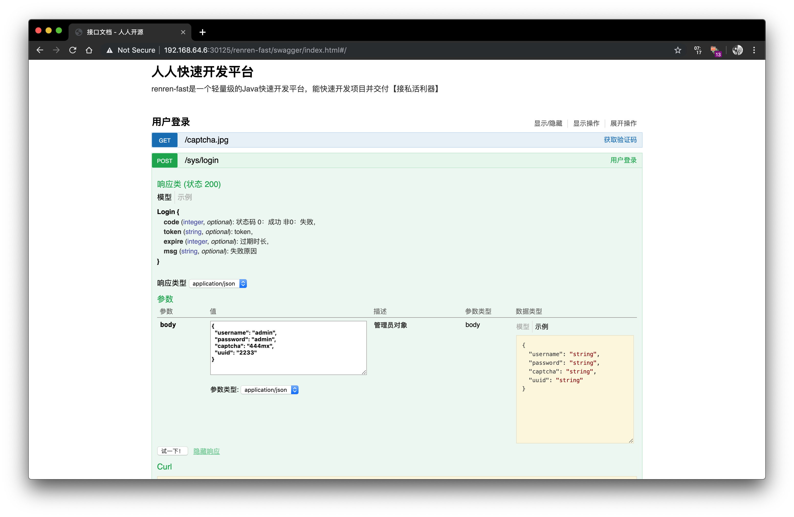
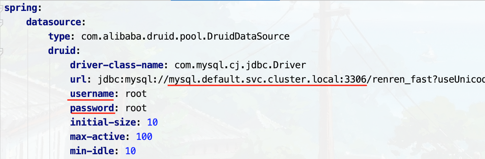
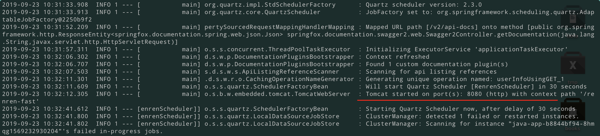
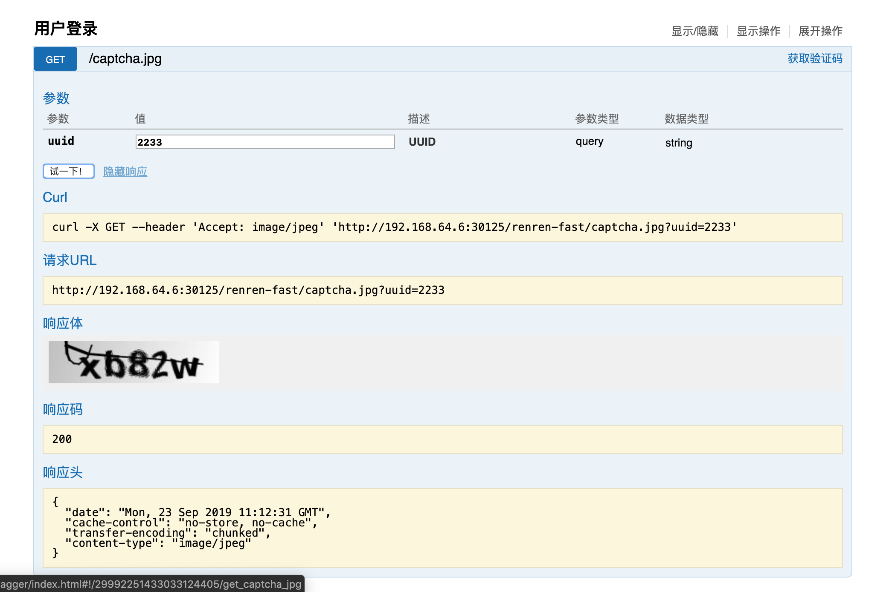

从本篇开始，实战部署一个前后端分离的项目，分别部署一个前端，一个后端，一个服务端
前置准备
请确保已经按照教程1、教程2完成了Docker私服以及MySQL单机服务的部署，明确一下几点环境信息
- 本地IP：192.168.64.6
- Docker registry私服地址：192.168.43.205:5000
- MySQL地址：
- 外部地址：192.168.64.6:3306
- 内部service名称：mysql
- 内部地址：mysql.default.svc.cluster.local:3306
部署的项目
此为前后端分离项目，本篇介绍后端部署，不包含Redis的连接，且为单实例

部署完成后的效果图（由于为后端应用，所以仅提供查看swagger文档的功能）

修改项目配置并打包
首先按照官网教程先把项目克隆到本地，然后用maven下载各种依赖，确保可以正常打包
打开文件 src/main/resources/application.yml，把 spring.profiles 的参数改为 prod ，这样子最终使用的将会是 src/main/resources/application-prod.yml 文件中配置的参数，而不是同级目录中的 application-dev.yml
注意到 server.port 配置的端口为8080
之后，打开文件 src/main/resources/application-prod.yml，修改如下图红线的部分

分别改为Kubernetes中内部DNS对应的MySQL的service的url，基本格式是 service名称.命名空间的名称.svc.cluster.local ，下面两个分别为用户名和密码
同时注意到该程序使用的MySQL的数据库命名为 renren_fast
在项目根目录下使用命令 mvn clean install -Dmaven.test.skip=true 对项目进行打包，生成的jar文件在 target/renren-fast.jar 中
打包成镜像并推送至私有仓库
打开项目根目录下的 Dockerfile，将 ADD renren-fast.jar /app.jar 修改为 ADD target/renren-fast.jar /app.jar
在项目根目录下执行打包命令
1 | docker build -t 192.168.43.205:5000/renren-fast-server:1.3 . |
注意，由于我本地测试了多次，所以打了很多的tag，本次tag代表的版本为1.3
打包完成，将其推送至私服
1 | docker push 192.168.43.205:5000/renren-fast-server:1.3 |
准备前置数据
在项目文件夹 db 下有需要导入的sql文件，由于我们使用的是MySQL，所以需要导入的是 db/mysql.sql 文件，由于 renren_fast 数据库还不存在，所以先需要远程登录创建一下
1 | mysql -h 192.168.64.6 -P 3306 -u root -p |
执行sql命令
1 | create database renren_fast; |
随后导入sql文件
1 | mysql -h 192.168.64.6 -P 3306 -u root -p renren_fast < db/mysql.sql |
编写Kubernetes配置文件
现在编写Deployment和Service
Deployment配置如下
1 | # springboot-deployment.yaml |
Service配置如下，设置为NodePort类型，便于暴露端口
1 | # springboot-nodeport.yaml |
如果两个文件是在同一个文件夹下的，那么直接在该文件夹下执行如下命令即可
1 | kubectl apply -f . |
测试
由于SpringBoot启动较慢，所以要等待一段时间。这里直接用 kubectl attach <pod 名称> 直接查看SpringBoot的输出log，如果看到下面这些内容了就代表启动完毕

然后就可以访问其swagger文档页测试各种api了，我测试机上访问的链接是 http://192.168.64.6:30125/renren-fast/swagger/index.html
